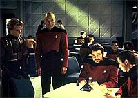
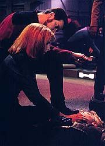
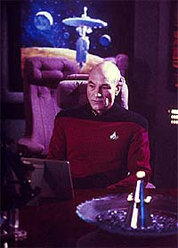
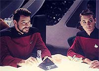
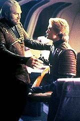

|
MANCHETE
DO EPISDIO
Histria
mostra conflito entre herana
gentica e condicionamento cultural
Episdio
anterior | Prximo
episdio
Sinopse:
Data Estelar: 44143.7.
 A
Enterprise descobre uma nave Talariana deriva no espao, com
cinco adolescentes inconscientes, sendo um deles humano.
Criado desde pequeno como um Talariano e conhecido como Jono, o
garoto na verdade Jeremiah Rossa, desaparecido h uma dcada,
desde quando seus pais morreram em um ataque dos Talarianos colnia
em que viviam.
 Jono
tambm o filho adotivo de uma capito Talariano, Endar, que
resolveu cri-lo aps a morte de seu prprio filho. Quando a av
do garoto, a almirante Connaught Rossa da Frota Estelar, pede a
Picard que traga o garoto de volta para a Terra, Endar ameaa
entrar em guerra com a Federao.
O garoto ainda mostra claros sinais de que tem sido abusado por
Endar. Esse, por sua vez, diz que suas cicatrizes foram causadas
pelas brincadeiras normais da infncia Talariana.
Picard ento tem que escolher se arrisca um conflito com os
talarianos, ou devolve Jono para seu pai adotivo. Aps sofrer um
atentado por parte de Jono, que deseja apenas se ver livre do
conflito (esperando ser morto por tentar matar o capito), Picard
percebe que deve dar prioridade vontade do menino, que
culturalmente j muito mais Talariano do que humano.
Jono volta para Endar, evitando o conflito entre a Federao e os
Talarianos.
Comentrios:
 "Suddenly
Human" discute uma velha questo: a primazia e a competio
quando se confrontam pais naturais e pais adotivos. A abordagem
feita pelo episdio muito rica, trabalhando a polmica em vrios
nveis de profundidade na interpretao, levando em conta
diferentes perspectivas.
O episdio consegue combinar perfeitamente um roteiro bem escrito
com uma histria bem amarrada e os questionamentos filosficos to
comuns a Jornada nas Estrelas. Foi essa qumica --que faltou
nas primeiras temporadas de A Nova Gerao-- a fora
motriz que colocou a srie como um grande sucesso de pblico e crtica.
Em um nvel mais direto, a grande questo debatida : quem tem
mais direito criana, o pai adotivo ou os familiares com laos
de sangue, levando em conta que a criana foi adotada sem a
autorizao ou o conhecimento da famlia natural?
 Mas
a discusso mais sutil do episdio fica por conta de um pensamento
muito mais filosfico: o que faz de um ser humano realmente humano?
Quanto de ns natural da espcie e o quanto mera programao
cultural?
 A
resposta vem atravs do personagem Jono. Apesar de humano por
natureza, ele era muito mais Talariano do que terrqueo, em muitos
sentidos.
Por fim, o episdio tambm mostra a dificuldade de Picard em atuar
como figura paterna, o que rende interessantes e divertidos dilogos
com a conselheira Troi. A situao no indita em Jornada
nas Estrelas: o capito James Kirk passou por aperto semelhante
no episdio da Srie Clssica "Charlie
X".
Citaes:
Troi - "This is
a banana split... and it's quite possibly one of the greatest things
in the universe."
("Isso uma banana split... e possivelmente uma das
melhores coisas do Universo.")
Trivia:
 Julgando pelo "mapa galctico"
do departamento de arte de Jornada, o setor de Talarian no Espao
ficaria adjacente ao territrio da Federao, oposto aos territrios
dos Klingons e Romulanos.
Julgando pelo "mapa galctico"
do departamento de arte de Jornada, o setor de Talarian no Espao
ficaria adjacente ao territrio da Federao, oposto aos territrios
dos Klingons e Romulanos.
Originalmente
os talarianos do episdio seriam uma nova raa, os phrygianos, porm
Michael Okuda deu a idia de utilizarem alguma raa que havia sido
apenas citada em algum episdio anterior. Os talarianos foram
citados em "Heart of Glory",
como os construtores do cargueiro Batris.
Ficha
tcnica:
Histria de Ralph Phillips
Roteiro de John Whelpley e Jeri Taylor
Direo de Gabrielle Beaumont
Exibido em 15/10/1990
Produo: 076
Elenco:
Patrick Stewart como
Jean-Luc Picard
Jonathan Frakes como William Thomas Riker
Brent Spiner como Data
LeVar Burton como Geordi La Forge
Michael Dorn como Worf
Gates McFadden como Beverly Crusher
Marina Sirtis como Deanna Troi
Wil Wheaton como Wesley Crusher
Elenco convidado:
Chad Allen como Jono
Sherman Howard como capito talariano Endar
Barbara Townsend como almirante Connaught Rossa
Episdio
anterior | Prximo
episdio
|